Built from your six favorites. All bosses target the hero, have visible health bars and offscreen pointers, and award an Epic item through Keep / Sell when defeated. The wave still ends on its timer if the boss survives.
Existing bosses remain on waves 6, 12 and 20. First five waves are unchanged. Launch normally with launch.ps1 on feat/boss-expansion.
Verified: all 1,000 tests pass; all six models import and animate in Godot. Native captures below show the opening attack, while integration tests exercise repeated patterns and phase changes. Balance and minimum-spec performance still need playtesting.
WAVE 08
Frostforge Yeti
Alternating fist impacts, with double slams below half health.
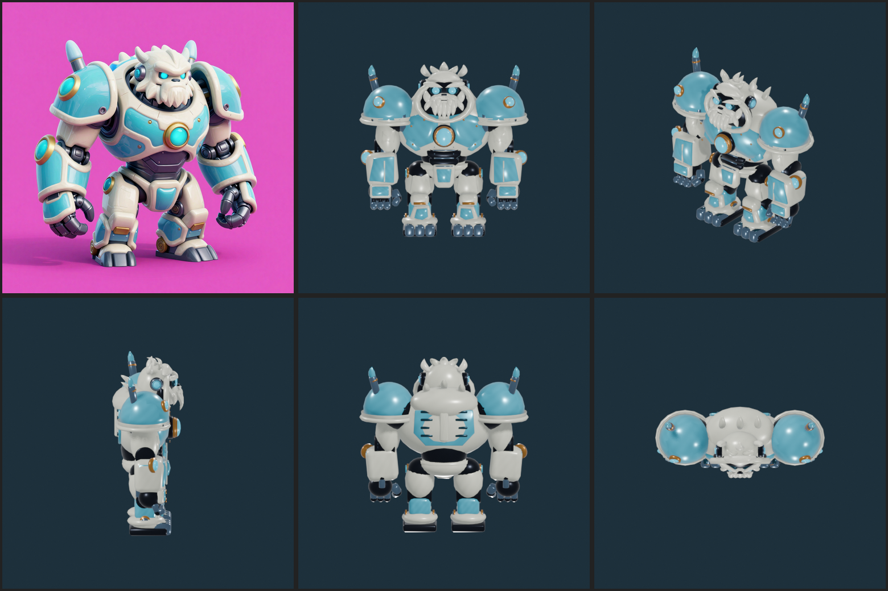
Play native Godot attack capture
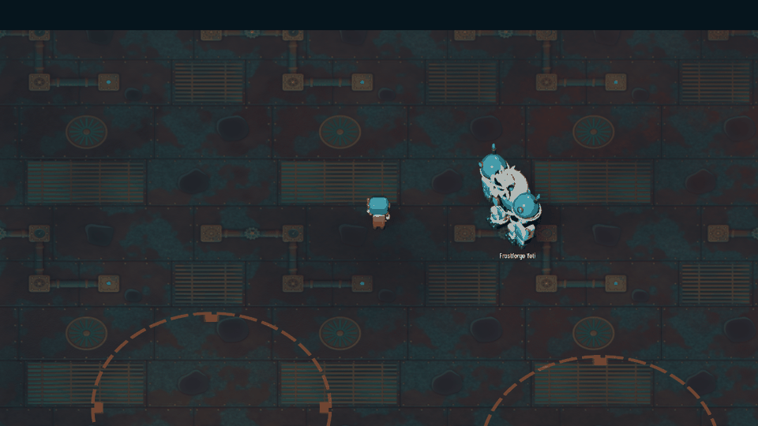
25,430 triangles · 12 meshes · 8 materials · Idle / Walk / Swim / Attack
WAVE 10
Broadside Baron
Four corner cannons, each limited to a 120-degree outward arc. Rear cannons added; fins removed.
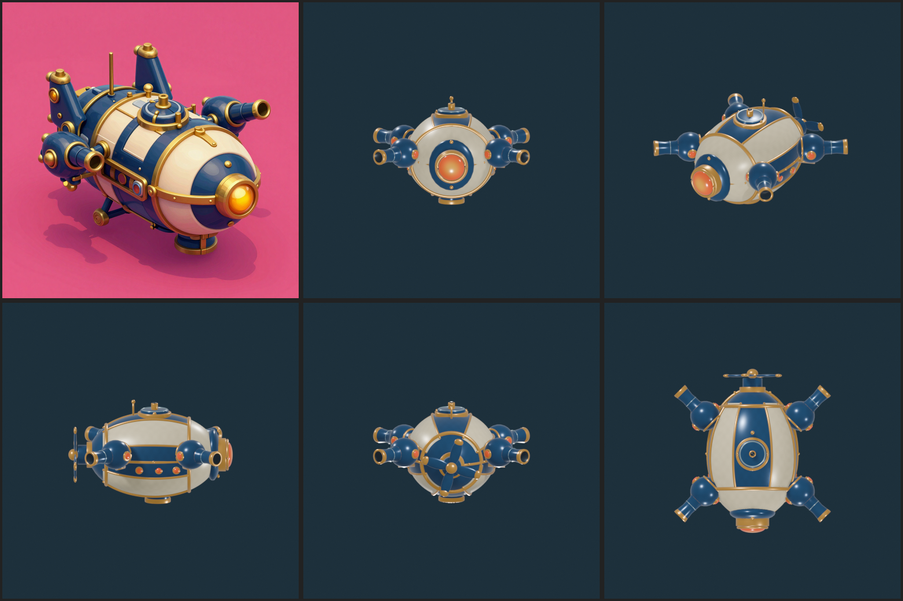
Play native Godot attack capture
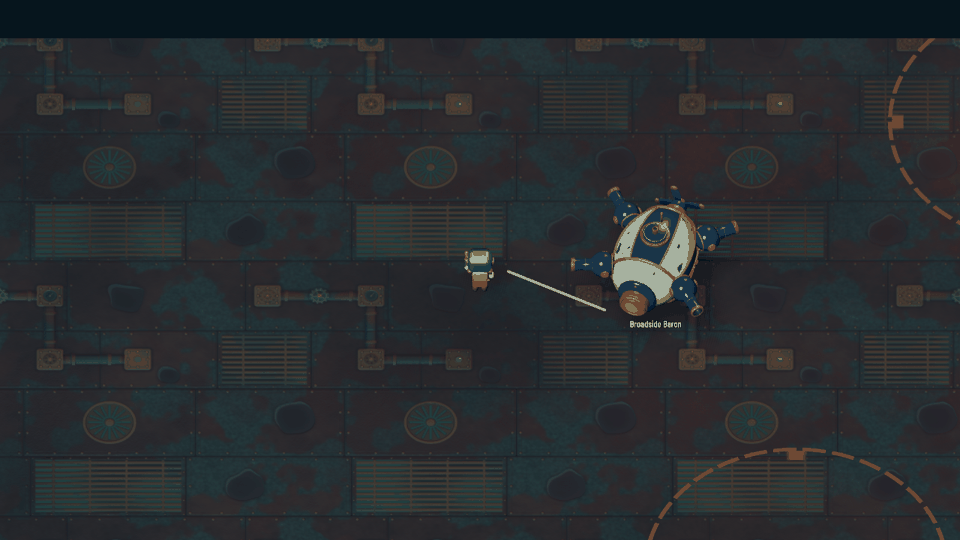
43,196 triangles · 6 meshes · 6 materials · Idle / Walk / Swim / Attack
WAVE 14
Crucible Crab
Furnace shell bombardment alternates with a warned heat sweep.
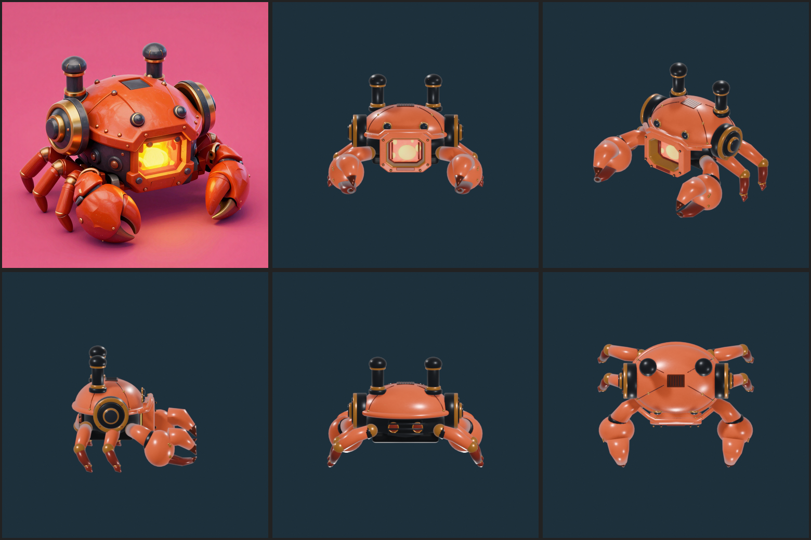
Play native Godot attack capture
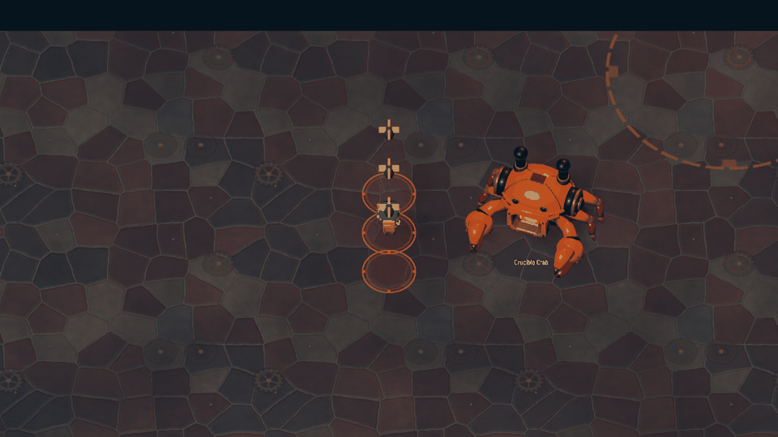
35,710 triangles · 19 meshes · 8 materials · Idle / Walk / Swim / Attack
WAVE 16
Skyfall Kestrel
Fast committed bombing runs leave delayed artillery impacts along the flight path.
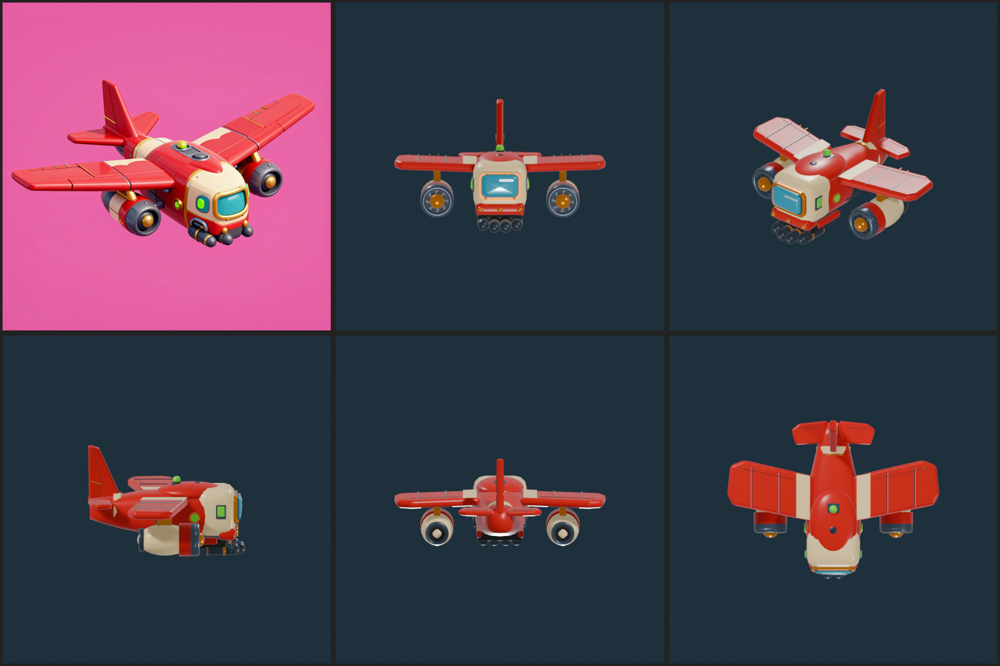
Play native Godot attack capture
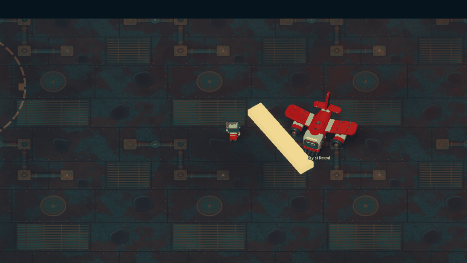
30,322 triangles · 19 meshes · 11 materials · Idle / Walk / Swim / Attack
WAVE 18
Pendulum Regent
Hammer strikes alternate with sweeping pendulum energy. Low health adds an echo impact.
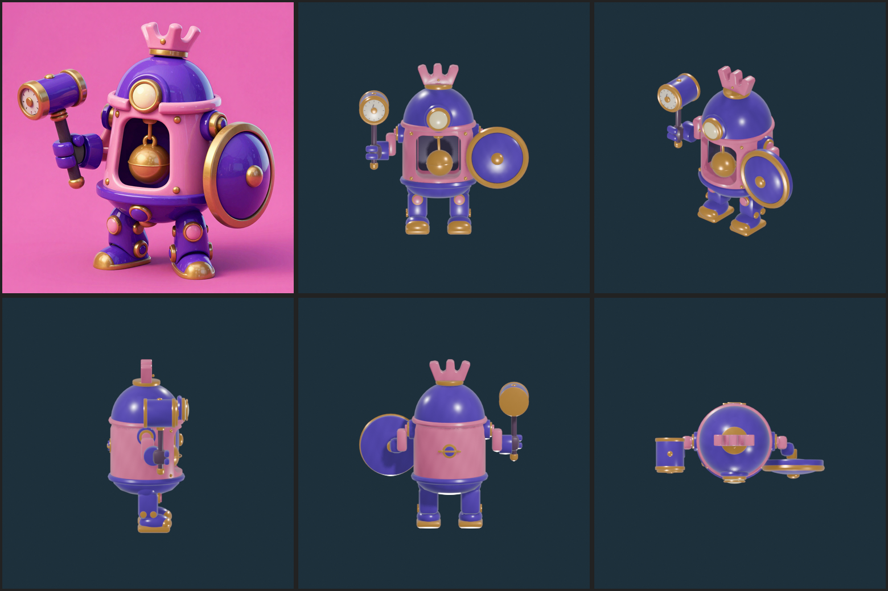
Play native Godot attack capture
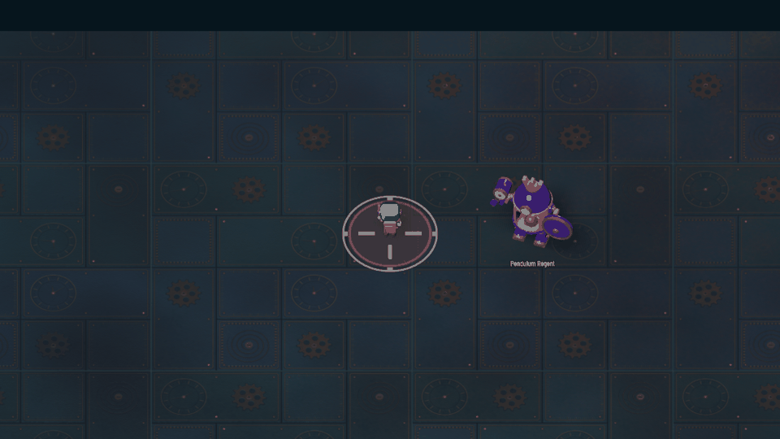
37,676 triangles · 6 meshes · 7 materials · Idle / Walk / Swim / Attack
WAVE 19
Crownwheel Colossus
Warned rolling charges alternate with radial volleys with a safe gap.
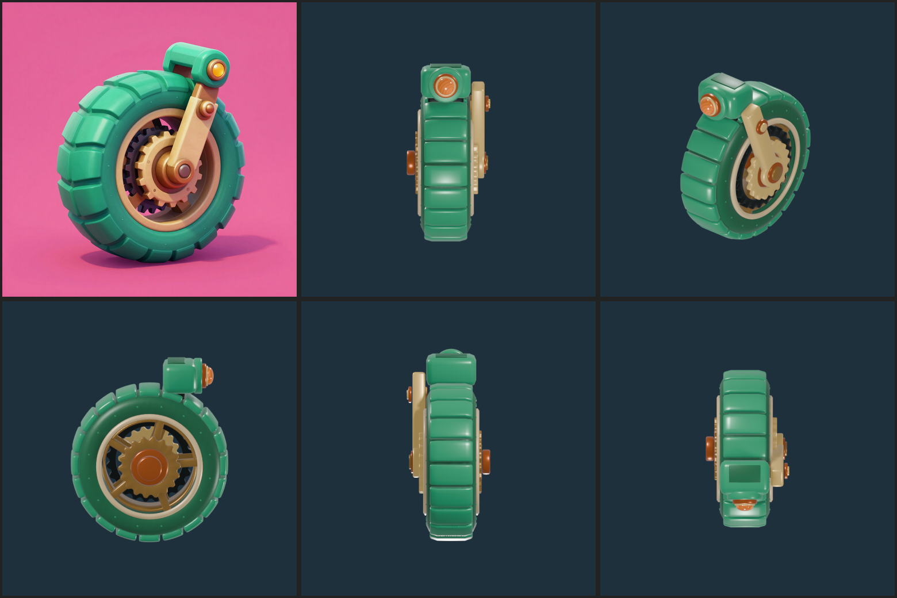
Play native Godot attack capture
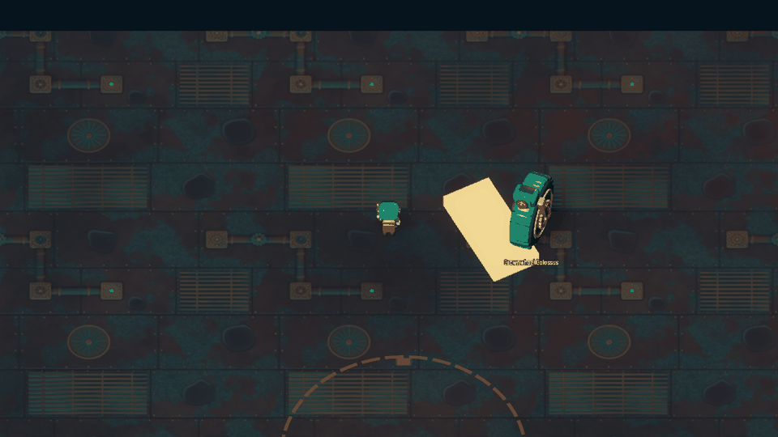
30,860 triangles · 26 meshes · 8 materials · Idle / Walk / Swim / Attack